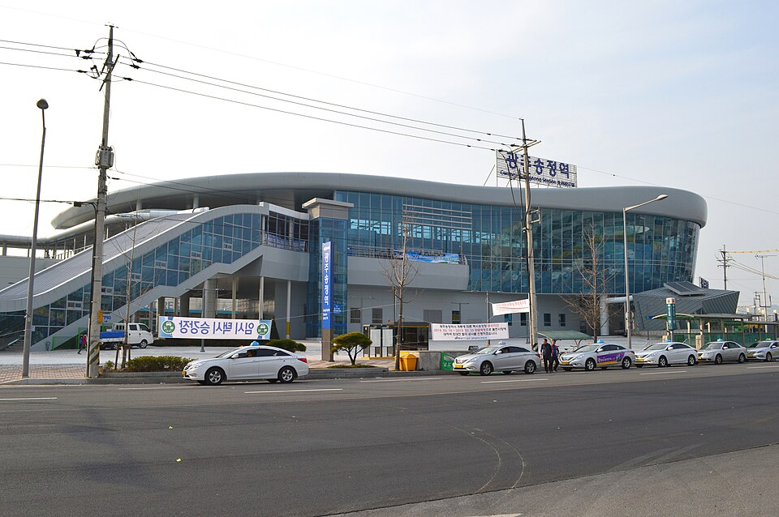

광산구 검정고시 — 사회·한국사를 묶어서 끝내는 법

사회와 한국사는 “외우면 되는 과목”이라고들 합니다. 맞는 말이긴 한데, 그래서 가장 많이 포기하는 과목이기도 합니다. 외울 게 끝이 없어 보이거든요. 광산구 검정고시를 준비하면서 이 두 과목에 막혀 계신다면, 더 외우는 대신 묶는 쪽으로 방법을 바꿔 보시면 좋겠습니다.
한국사는 먼저 큰 순서만 세웁니다
연도와 인물부터 외우기 시작하면 백이면 백 지칩니다. 순서는 반대입니다. 시대의 큰 순서를 먼저 머릿속에 세워 두고, 세부 사실은 그 자리에 하나씩 얹는 겁니다.
빈 종이에 시대 흐름을 순서대로 적어 보는 것부터 해 보세요. 처음엔 듬성듬성해도 괜찮습니다. 이 뼈대가 있으면 새로 배운 사건이 “언제쯤 일인지” 자리를 찾아갑니다. 뼈대가 없으면 아무리 외워도 서로 섞입니다.
사회는 개념 하나에 예시 하나
- 정의만 외우지 않습니다 — 개념 설명을 읽었으면 그에 해당하는 실제 예를 하나씩 붙여 둡니다. 시험 문제가 대개 사례로 나오기 때문입니다.
- 비슷한 개념은 나란히 놓고 비교 — 따로 외우면 헷갈리는 것도, 차이점 한 줄로 정리해 두면 구분이 붙습니다.
- 표·그래프·자료 읽기 연습 — 사회는 자료를 해석하는 문제 비중이 있습니다. 이건 암기로는 안 되고 풀어 봐야 늘어요.
두 과목이 겹치는 지점을 활용하세요
사회에서 배우는 제도나 사회 구조는 한국사에서 그 제도가 생긴 과정을 배우는 경우가 많습니다. 두 과목을 따로 공부하면 같은 내용을 두 번 외우게 되지만, 같은 주에 붙여서 공부하면 한쪽에서 이해한 게 다른 쪽에서 그대로 쓰입니다. 암기량이 실제로 줄어드는 지점입니다.
그리고 검정고시는 전 과목 평균 60점 이상이면 합격이고, 60점을 넘긴 과목은 과목 합격으로 남습니다. 사회와 한국사는 제대로 묶어서 공부하면 비교적 빠르게 60점 선을 넘길 수 있는 과목이라, 먼저 끝내 두면 남은 과목에 쓸 시간이 늘어납니다.
광산구에서 이렇게 함께합니다
저희는 1:1 맞춤 과외라 외우는 방식도 사람에 맞춰 잡습니다. 어떤 분은 소리 내어 설명할 때 남고, 어떤 분은 직접 써 봐야 남아서 같은 단원도 진행 방법이 달라집니다. 혼자 외울 때 제일 힘든 “제대로 외운 게 맞나”를 확인하는 일은 수업에서 같이 점검합니다. 광산구와 인근 지역은 방문 수업이 가능하고, 이동이 부담되면 화상(줌) 수업으로 집에서 그대로 진행합니다.